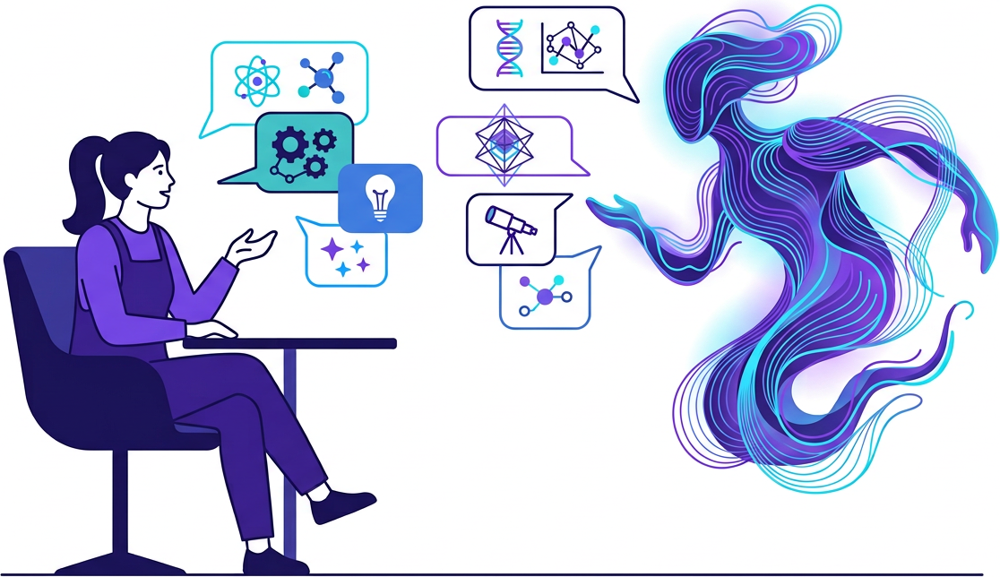
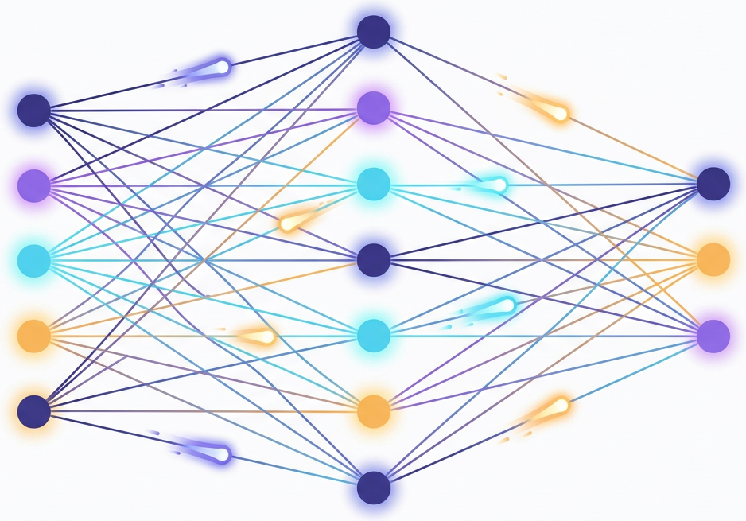

它不是查字典，也不是背答案——读完这 7 张，你会知道它到底在干什么。
模型内部没有一张“词义表”。它做的是：根据已有的上文，估算下一个词出现的概率，挑一个继续往下写。

你打的字先切成 token（词块），每个词块会变成一串数字，也就是向量——意思相近的词，在数字空间里也靠得近。

这就是注意力机制：读到“它”时，模型会去问“前面的谁和‘它’最相关”，再把相关词的信息加权取回来。
例：“小猫把毛线球滚到了沙发下，因为它困了。” —— 模型需要判断“它”指的是小猫。
预训练：读遍互联网文本，学会“下一个词该是什么”。
指令微调：用人工写的问答示范，学会“听懂指令”。
对齐：由人类打分排序，学会“好好说话、不乱说”。
因为它的训练目标不是“说真话”，而是“接得像”。训练数据里没见过的内容，它会顺着语言习惯编一个最像真的答案。
涉及数字、人名、文献、最新事件时，务必自己核对一遍。
① 它在预测，不是在检索；
② 它的知识停在训练那一天；
③ 好提示词 = 给足上下文 + 说清目标。